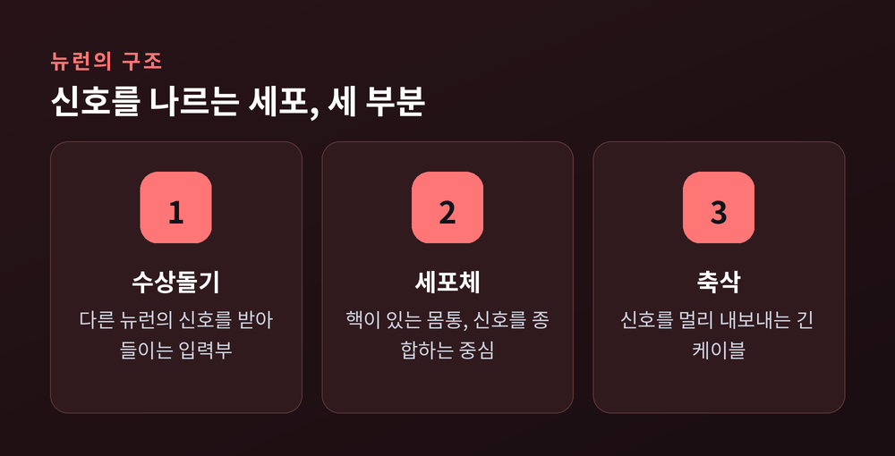
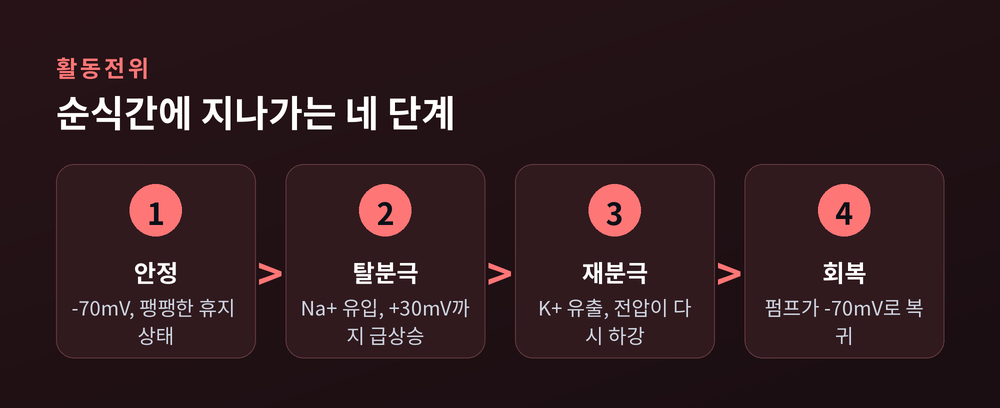
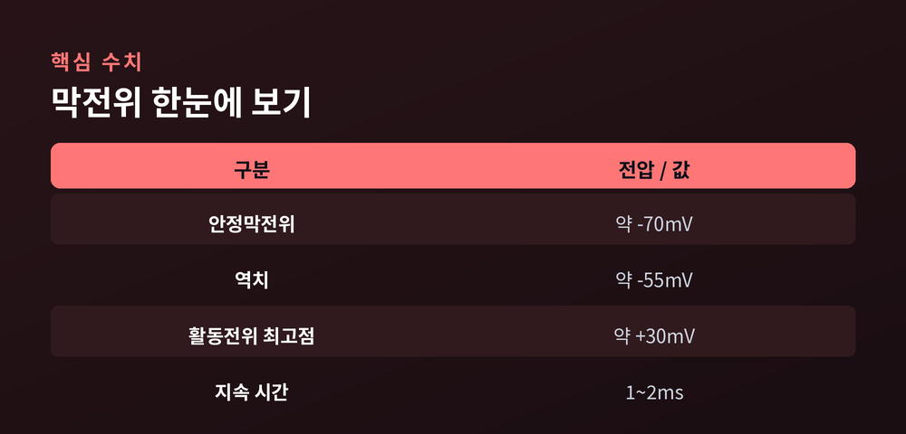
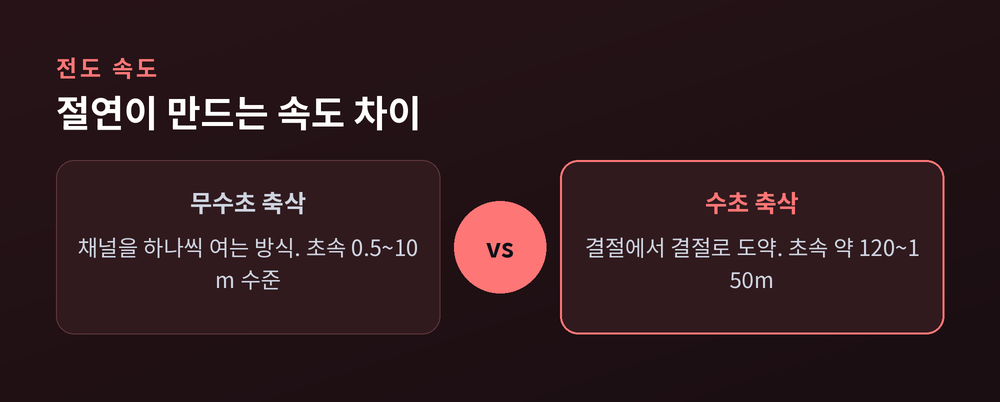

오늘은 뉴런과 활동전위에 대해 이야기해 보려 합니다.
우리가 손끝을 데었을 때 순식간에 손을 떼는 일, 누군가의 이름을 떠올리는 일. 그 모든 것의 바탕에는 뇌 속을 흐르는 아주 작은 전기신호가 있습니다. 이 글에서는 뉴런 하나가 어떻게 전압을 바꿔 정보를 실어 나르는지, 그 원리를 차근히 따라가 보겠습니다.
뇌의 정보 처리를 담당하는 세포를 뉴런, 즉 신경세포라 부릅니다.
뉴런은 크게 세 부분으로 이루어져 있습니다. 가운데 둥근 몸통인 세포체가 있고, 여기서 두 종류의 가지가 뻗어 나옵니다. 하나는 신호를 받아들이는 수상돌기입니다. 나뭇가지처럼 여러 갈래로 벌어져 다른 뉴런에서 오는 입력을 그러모읍니다. 다른 하나는 신호를 내보내는 긴 케이블, 축삭입니다.
정리하면 이렇습니다. 수상돌기로 듣고, 세포체에서 판단하고, 축삭으로 말합니다.

한 뉴런이 다른 뉴런과 만나는 접점을 시냅스라고 합니다. 그 수가 만만치 않습니다. 우리 뇌 안에는 100조 개가 넘는 시냅스가 얽혀 있고, 그 사이를 오가는 신경전달물질만 100가지가 넘습니다. 이 촘촘한 그물이 곧 생각과 감각의 무대인 셈입니다.
뉴런은 아무 일도 하지 않을 때조차 쉬고 있지 않습니다.
자극받지 않은 뉴런의 세포막 안쪽은 바깥쪽보다 약 -70mV만큼 음전하를 띱니다. 이 값을 안정막전위라고 부릅니다. 아무 신호가 없어도 세포막을 사이에 두고 전압 차이가 팽팽히 걸려 있는 상태입니다.
왜 하필 음전하일까요. 열쇠는 이온의 불균형입니다.
칼륨 이온은 세포 안에 많고, 나트륨 이온은 세포 밖에 많습니다. 그런데 세포막에는 칼륨이 새어 나가는 통로가 나트륨 통로보다 훨씬 많습니다. 그래서 양전하를 띤 칼륨이 계속 밖으로 빠져나가고, 안쪽은 상대적으로 음전하로 기웁니다.
여기에 나트륨-칼륨 펌프가 힘을 보탭니다. 이 펌프는 ATP라는 에너지를 써서 나트륨 3개를 밖으로 퍼내고 칼륨 2개를 안으로 들입니다. 3 대 2. 나가는 양이온이 들어오는 양이온보다 많으니, 안쪽은 음전하 상태를 안정적으로 유지합니다. 뉴런이 쉬는 것처럼 보여도 실은 끊임없이 에너지를 태워 이 긴장을 붙들고 있는 것입니다.
이제 자극이 도착했다고 해봅시다.
막전위가 조금씩 위로 올라가다가 약 -55mV라는 선을 넘는 순간, 상황이 급변합니다. 이 선을 역치라고 합니다. 역치를 넘으면 전압에 반응하는 나트륨 채널이 한꺼번에 열립니다. 밖에 몰려 있던 나트륨이 세포 안으로 쏟아져 들어옵니다. 순식간에 막전위가 +30mV 부근까지 치솟습니다. 이 급상승을 탈분극이라 부릅니다.
정점을 찍으면 곧바로 되돌리는 과정이 시작됩니다. 나트륨 채널이 닫히고, 이번엔 칼륨 채널이 열립니다. 칼륨이 밖으로 빠져나가며 전압이 다시 아래로 떨어집니다. 이것이 재분극입니다. 칼륨이 조금 과하게 빠져나가 -70mV보다 더 내려가는 순간도 잠깐 있는데, 이를 과분극이라 합니다. 그 뒤 펌프가 이온을 정리해 다시 -70mV로 돌아옵니다.
이 모든 반전이 걸리는 시간은 고작 1~2ms, 즉 1000분의 1초 단위입니다.

한 가지 인상적인 규칙이 있습니다. 활동전위는 '전부 아니면 전무'로 작동합니다. 역치를 넘으면 뉴런은 언제나 똑같은 크기로 완전히 반응하고, 넘지 못하면 아예 반응하지 않습니다. 자극이 두 배로 세다고 해서 활동전위가 두 배로 커지지는 않습니다. 크기는 늘 일정합니다.
그렇다면 뇌는 자극의 세기를 어떻게 구별할까요. 답은 빈도입니다. 강한 자극일수록 같은 크기의 신호를 더 촘촘히, 더 자주 쏘아 보냅니다. 세기를 진폭이 아니라 리듬으로 옮겨 적는 셈입니다.

활동전위는 한자리에 머물지 않습니다.
한 지점이 탈분극되면 바로 옆 지점의 채널을 열어, 파도가 번지듯 축삭을 따라 이동합니다. 지나간 자리는 펌프가 다시 -70mV로 정돈합니다.
흥미로운 점은 방향입니다. 활동전위가 막 지나간 부위는 잠시 어떤 자극에도 반응하지 못하는 상태에 빠집니다. 이 짧은 휴지기를 불응기라고 합니다. 방금 흥분한 뒤쪽은 잠겨 있으니, 신호는 되돌아가지 못하고 앞으로만 나아갑니다. 덕분에 정보가 뒤섞이지 않고 한 방향으로 또렷하게 전달됩니다.
같은 전기신호라도 전달 속도는 천차만별입니다. 그 차이를 가르는 것이 수초입니다.
수초는 축삭을 감싸는 지방질 절연층입니다. 전선을 감싼 피복을 떠올리면 됩니다. 수초로 덮인 구간에서는 전류가 밖으로 새지 않습니다. 다만 수초는 군데군데 끊겨 있는데, 그 노출된 틈을 랑비에 결절이라 부릅니다. 전압에 반응하는 나트륨 채널은 바로 이 결절에만 몰려 있습니다.
그 결과 활동전위는 수초로 덮인 구간을 건너뛰고 결절에서 결절로 껑충껑충 뛰어넘습니다. 이 방식을 도약전도라고 합니다. 매 지점마다 채널을 하나하나 여는 것보다 훨씬 빠르고, 에너지도 아낍니다.

속도 차이는 극적입니다. 수초가 없는 축삭은 초속 0.5~10m 수준으로, 대략 걸음보다 조금 빠른 정도입니다. 반면 수초로 감싼 축삭은 초속 약 120~150m까지 치닫습니다. 자료에 따라 최고치는 조금씩 다르게 보고되지만, 수십 배 빨라진다는 결론은 같습니다. 뜨거운 냄비에 손이 닿자마자 몸이 반응하는 그 즉각성은, 바로 이 절연과 도약 덕분입니다.
한 가지 덧붙이면, 이 수초가 손상되는 질환에서는 신호 전달이 느려지고 흐트러집니다. 절연이 얼마나 중요한지를 거꾸로 보여주는 셈입니다.
축삭 끝에 다다른 신호는 그대로 다음 뉴런에 넘어가지 않습니다.
두 뉴런 사이에는 시냅스라는 아주 좁은 틈이 있습니다. 전기신호가 이 틈 앞에 도착하면, 신호는 화학물질로 옷을 갈아입습니다. 축삭 말단에서 신경전달물질이 틈으로 방출되고, 이 물질이 건너편 뉴런의 수용체에 달라붙습니다. 그러면 그 뉴런에서 다시 전위 변화가 일어나고, 조건이 맞으면 새로운 활동전위가 태어납니다.
정리하면, 신호는 뉴런 안에서는 전기로 달리고 뉴런과 뉴런 사이에서는 화학으로 건넙니다. 이 릴레이가 쉼 없이 이어지며 하나의 감각, 하나의 생각이 완성됩니다.
끝으로 한 마디만 더 드리겠습니다.
우리가 무언가를 느끼고 떠올리는 일은, 거창한 무엇이 아니라 -70mV와 +30mV 사이를 오가는 수많은 작은 전압의 파동입니다. 예전에는 마음을 형체 없는 무엇이라 여겼습니다. 지금은 그 밑바탕에 흐르는 전기의 문법을 조금은 읽을 수 있게 되었습니다.
"생각은 결국, 정교하게 조율된 전기의 리듬이다."
다음번에 무심코 손을 뗄 때, 그 찰나에 수백 개의 뉴런이 -55mV의 문턱을 넘고 있었다는 사실을 한 번쯤 떠올려 보시면 좋겠습니다.